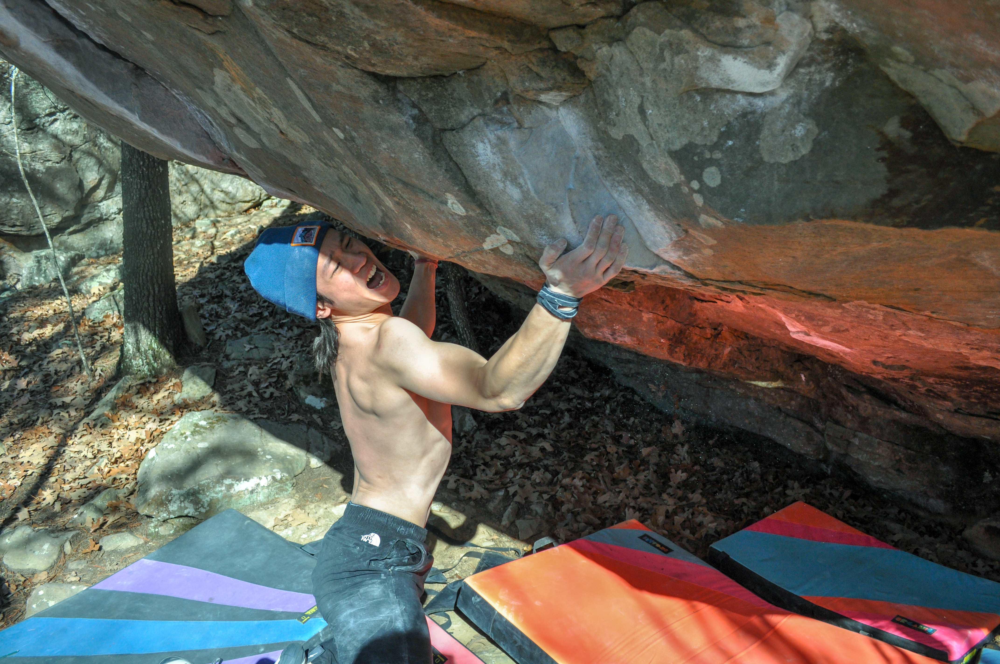

Ethan Zhang
Computer Science B.S. '26
University of Texas at Austin
Computer Science B.S. '26
University of Texas at Austin
This my personal site
Pintos is a simple operating system framework for the 80x86 architecture.
It supports kernel threads, loading and running user programs, and a file system.
Pintos could, theoretically, run on a regular IBM-compatible PC.
Threads: I introduced priority scheduling and priority donation to handle priority inversion.
This involved adding a priority variable to the thread's TCB and sorting the ready queue accordingly.
User Programs: Implemented essential system calls such as halt, exit, exec, wait, create, remove, open,
filesize, read, write, seek, tell, and close. Additionally, I managed stack allocation for user programs
and enabled argument passing.
Virtual Memory: Extended the system to accommodate stack growth and implemented paging using a supplemental
page table, frame table, and swap table. Implemented demand paging and eviction based on an enhanced clock
algorithm considering dirty pages.
File Systems: Enhanced the file system to support indexed and extensible files with subdirectories.
Implemented a multilevel indexed structure with 10 direct blocks, 1 indirect block, and 1 double indirect
block to handle various file sizes. Added system calls like chdir, mkdir, readdir, isdir, and inumber to
support subdirectories.
This chArm-v2
This Unix Shell
This Dynamic Memory Allocator
I first started climbing inside at a small gym called Canyons Climbing gym in February of 2021. Since then I fell in love with the sport and made the decision to specialize in bouldering. My favorite part of climbing is the problem solving aspect of figuring out a boulder. In many ways, it reminds of CS.
Although I enjoy spending time in the gym, my favortie memories come from being outside. I've been fortunate enough to climb in various states including Texas, Oklahoma, Arkansas, Colorado, and California. Nothing beats spending quality time with friends out in nature.
Some of the hardest and proudest climbs outside include:
1. Tequila Sunrise - V11, Hueco Tanks, El Paso, TX
2. Apollo 11 - V11, McGee Creek, Atoka, OK
3. Flip the Script - V11, Gus Fruh, Austin, TX
4. Fred's Roof - V10, Fred's Cave, Cowell, AR
5. Flash Gordan - V10, Horseshoe Canyon Ranch, Jasper, AR
As part of my climbing, I also do calisthenics on the side. I'm 5'5"/165cm and weigh about 135lbs/61kg.
Some of my proudest achievements include (seen above from left to right):
1. one arm pull up +10lbs
2. weighted pull up +135lbs
3. 6mm front lever
Email: ethanhzhang123@gmail.com
Phone: 214-436-9933